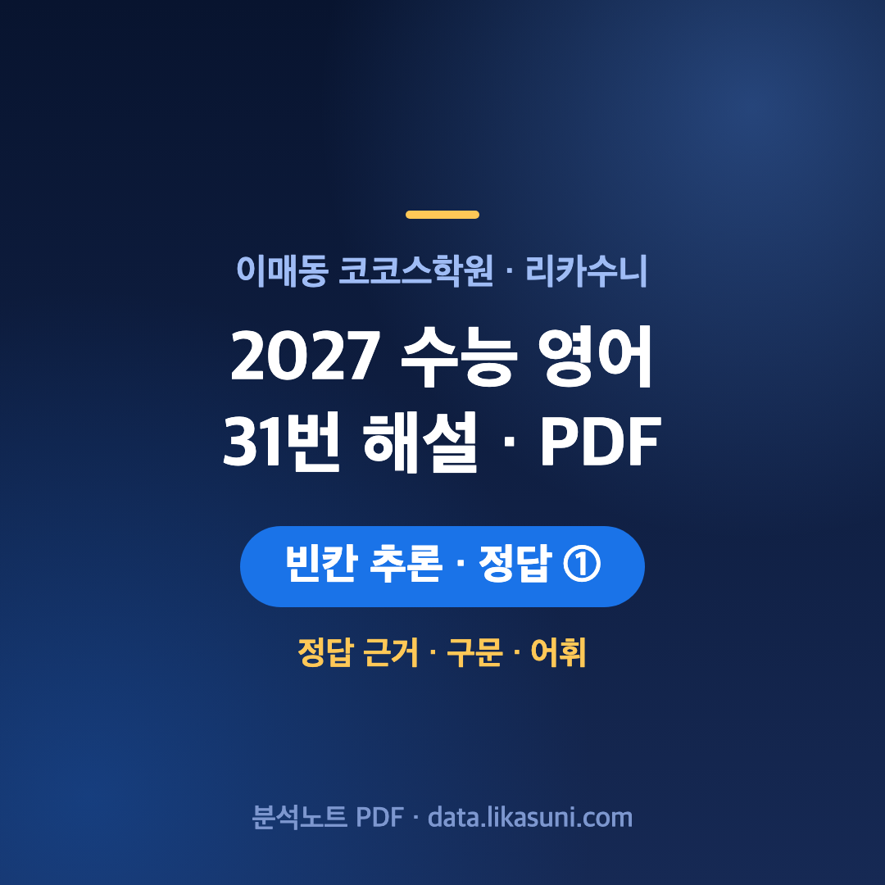
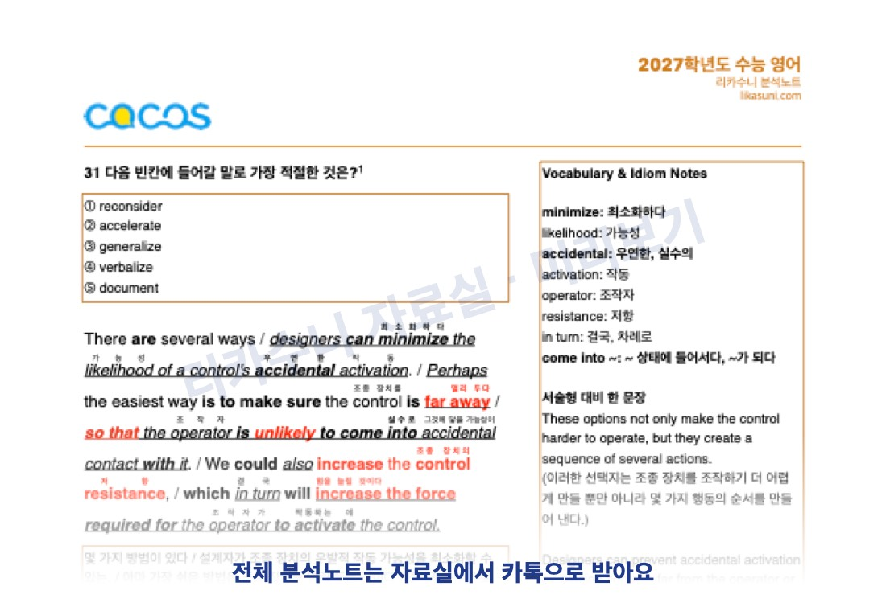

2027 수능 영어 31번 문제 해설이에요. (2027학년도 대학수학능력시험 영어 · 빈칸 추론 · 정답 ① reconsider, 2026년 11월 시행 수능)
정답 근거, 오답 거르는 법, 구문(not only A but also B · for + 의미상 주어 + to부정사 · so that), 어휘를 정리했고 분석노트 전자책·pdf 보는 곳은 글 아래에 있어요.
안녕하세요, 이매동 코코스학원 리카수니 원장입니다.
학생 요청으로 만든 분석노트를 바탕으로 정리했어요. 시험지를 옆에 펴 놓고 보시면 더 잘 보여요.
· 시험: 2027학년도 대학수학능력시험 영어 (2026년 11월 시행)
· 번호: 31번 (빈칸 추론)
· 정답: ① reconsider (다시 생각하다)
조종 장치가 실수로 작동되지 않게 설계하는 방법에 관한 글이에요.
장치를 멀리 두거나 저항을 키우고, 덮개·잠금으로 여러 단계를 거치게 하면, 단계마다 '결정'을 해야 하니 작동시킬지 다시 생각할 기회가 생긴다는 흐름이에요.
· 근거 1: 이런 방법들은 조작을 어렵게 할 뿐 아니라 '여러 행동의 순서(a sequence of several actions)'를 만들어 내요.
· 근거 2: 한 단계보다 많으면 행동뿐 아니라 '각 행동을 하겠다는 결정'까지 거쳐야 해요.
→ 각 지점마다 작동하겠다는 선택을 '다시 생각할(reconsider)' 기회, 정답 ①이에요.
· ② accelerate(가속하다) → 단계를 늘리는 건 작동을 빠르게 하는 게 아니라 늦추고 멈칫하게 해요.
· ③ generalize(일반화하다) → 선택을 일반화한다는 이야기는 없어요.
· ④ verbalize(말로 표현하다) → 결정을 말로 하라는 내용이 아니에요.
· ⑤ document(기록하다) → 기록 이야기는 글에 나오지 않아요.
빈칸 문제는 빈칸 바로 앞 문장(decisions to make each action)이 무엇을 말하는지 먼저 잡으세요.

1) 관계부사 생략 (ways 뒤)
→ There are several ways designers can minimize the likelihood of ~
2) so that (~하도록) / come into accidental contact with
→ make sure the control is far away so that the operator is unlikely to come into accidental contact with it
3) 계속적 용법 which / for + 의미상 주어 + to부정사
→ which in turn will increase the force required for the operator to activate the control
4) not only A but (also) B / make + O + 형용사 + to부정사
→ These options not only make the control harder to operate, but they create a sequence of several actions
5) not only of A but also of B / 목적격 관계대명사 that
→ a sequence not only of actions, but also of decisions to make each action
· minimize 최소화하다
· likelihood 가능성
· accidental 우연한, 실수의
· activation 작동 / activate 작동시키다
· operator 조작자
· resistance 저항
· in turn 결국, 차례로
· come into ~ ~ 상태에 들어서다
· recess 오목한 곳에 두다
· barrier 가림막, 장벽
· protective 보호하는
· lock A into position A를 제자리에 고정하다
· a sequence of 일련의
· reconsider 다시 생각하다
· by accident 실수로
분석노트에 '서술형 대비 한 문장'(These options not only make the control harder to operate, but they create a sequence of several actions. 이러한 선택지는 조종 장치를 조작하기 더 어렵게 만들 뿐만 아니라 몇 가지 행동의 순서를 만들어 낸다)과 영어 핵심 요약(Core Summary)을 해석과 함께 정리해 두었어요.
자료실에서 이 문항 분석노트를 전자책으로 바로 볼 수 있어요. (끊어 읽기·해석·구문·어휘 2쪽)
인쇄용 pdf 는 카카오 로그인 후 카톡으로 받을 수 있고, 다른 번호도 요청할 수 있어요.
▶ 2027 수능 영어 31번 해설·전자책
https://data.likasuni.com/suneung/2027/eng/31/
▶ 2027 수능 영어 분석노트·변형문제·단어 pdf
https://data.likasuni.com/suneung/2027/eng/
영어 문제지·정답표·해설과 듣기, 국어·수학·탐구·제2외국어 시험지도 회차 페이지에 모아 두었어요.
▶ 2027학년도 수능 전과목 문제·정답 pdf
https://data.likasuni.com/suneung/2027/
분당 이매동 코코스학원은 초등·중등·고등 영어와 수학을 가르쳐요.
모의고사·수능특강·내신 대비가 궁금하시면 편하게 문의해 주세요.
· 홈페이지: https://www.cocosedu.co.kr/
· 주소: 경기 성남시 분당구 판교로 476 2층